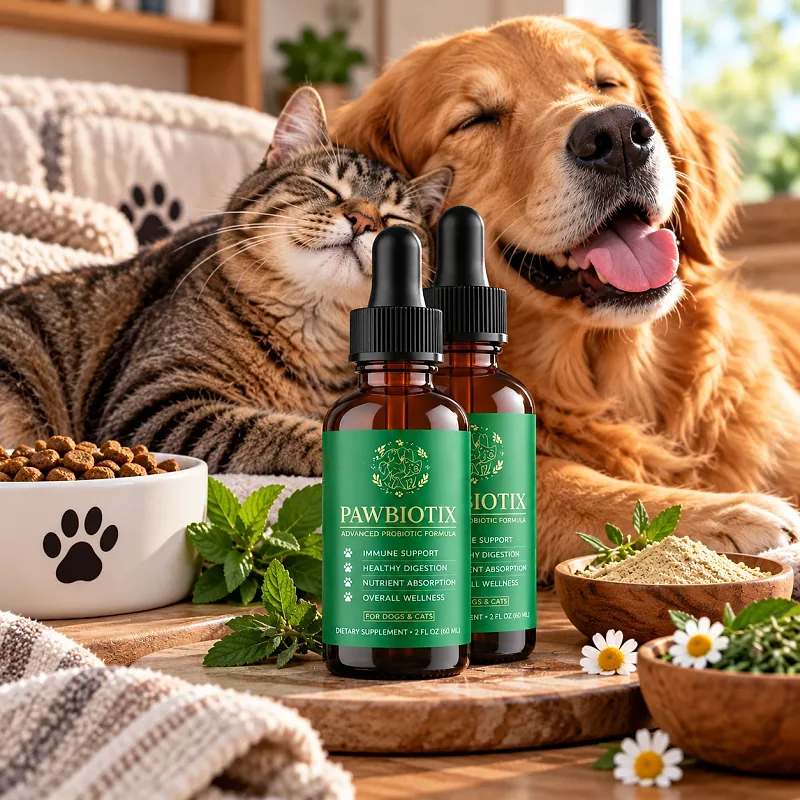
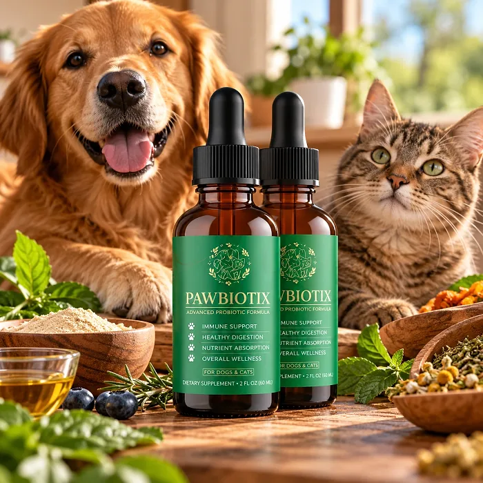

What Is Pawbiotix And How Does It Work?
Pawbiotix is a probiotic supplement for dogs in liquid drops, designed to support a healthy gut, good digestion, and overall vitality for dog owners who notice an upset tummy, low energy, or a dull coat and want a simple daily routine to support their pet's wellness.
The label states it plainly: "For use in dogs. Helps to support a healthy gastrointestinal tract." Its three highlights are Healthy Gut Support, Advanced Probiotics, and Next Level Nutrition.
The formula combines seven probiotic strains — Bacillus coagulans plus a blend of Lactobacillus acidophilus, rhamnosus, plantarum, and casei, and Bifidobacterium longum and breve — with a nutritional blend that includes chicory root inulin, beef liver, kelp, fish collagen, turmeric, and L-glutamine. The idea is to support the balance of good bacteria in the dog's gut, which plays a part in digestion, nutrient absorption, and immune health.
Rather than acting as a quick fix, Pawbiotix works as a daily routine, given once a day in the mouth or mixed with food. Most dogs accept it easily because of its flavor, and the dose is adjusted to the dog's weight, from small breeds to large ones.
With consistent daily use, a probiotic of this kind is intended to support more comfortable digestion and steady energy, especially when combined with a good-quality diet, fresh water, and regular exercise.
From a practical standpoint, Pawbiotix is a 1 oz (30 ml) dropper bottle, dosed by the dog's weight, with a natural flavor dogs tend to accept.
According to the label, Pawbiotix is manufactured in the USA from foreign and domestic ingredients in an FDA-registered facility. It is a supplement, not a replacement for veterinary care.
Pawbiotix Ingredients
The Supplement Facts panel of Pawbiotix lists the probiotics with their counts per ml and a proprietary blend of nutrients:
Bacillus coagulans, 1.5 mg (100 million CFU): A spore-forming probiotic known for surviving stomach acid.
6-Strain Probiotic Blend (250 million CFU): Lactobacillus acidophilus, rhamnosus, plantarum, and casei, and Bifidobacterium longum and breve, to support a balanced gut flora.
Chicory Root Inulin: A prebiotic fiber that feeds the good bacteria.
Beef Liver Powder and Hydrolyzed Fish Cod Collagen: Protein sources that add nutrition and flavor.
Kelp, Chlorella, and Sodium Copper Chlorophyllin: Greens that provide minerals and plant compounds.
Turmeric Root, Fennel Seed, PEA, Flax Seed, and L-Glutamine: Ingredients that support digestive comfort and the gut lining.
The other ingredients are glycerin, water, natural flavors, sodium benzoate, potassium sorbate, and citric acid. The sales page also mentions a "bacon type flavor". The label does not show the amount of each ingredient in the proprietary blend.
One detail worth knowing: the official label says for use in dogs; it does not mention cats.
Pawbiotix Side Effects
Pawbiotix is generally considered well tolerated and is designed for dog owners who want a gentle, natural way to support their dog's gut health with a daily liquid.
The official website describes the formula as natural, non-GMO, and free of stimulants, and the label states that it is manufactured in an FDA-registered facility. Introducing it gradually, starting with a smaller amount mixed into food, can help sensitive dogs adjust.
The label includes important cautions that every owner should read. It says the product is not for use in animals with epilepsy, not for animals with kidney or liver disease, and not for animals receiving other drugs unless directed by a veterinarian. It is also not for use in immature, pregnant, or lactating animals. Some dogs may have softer stools or mild gas in the first days while the gut adjusts, and dogs with fish or beef allergies should not take it. In case of accidental overdose, the label says to consult a veterinarian. It is not intended to diagnose, treat, cure, or prevent any disease.
Because of these cautions, talking to your veterinarian before starting Pawbiotix is the safest choice, especially for older dogs or dogs on medication.
Pawbiotix Dosage
The Pawbiotix dose depends on the dog's weight. The label gives a simple chart: 0.5 ml for dogs of 1 to 25 lbs, 1 ml for 26 to 50 lbs, 1.5 ml for 51 to 75 lbs, and 2 ml for dogs over 76 lbs.
The directions are to use the dropper to place the dose directly into your dog's mouth or mix it with food, once daily. Mixing it with a favorite meal is usually the easiest way for picky dogs.
Each bottle holds 1 oz (30 ml), so how long it lasts depends on the size of the dog: about a month for a large dog, and longer for small dogs. The label says to refrigerate after opening and use within 6 months, which helps keep the probiotics alive.
The label also advises keeping the bottle out of the reach of children, storing it in a cool, dry place, and not using it if the safety seal is damaged or missing.
As with any supplement, do not exceed the dose for your dog's weight. Pawbiotix works best as part of a routine that includes a balanced diet, fresh water, exercise, and regular veterinary check-ups.
Pawbiotix – Refund Policy
You can order Pawbiotix with confidence, knowing that every purchase is protected by a money-back guarantee counted from the day you get your package. The order page and the FAQ speak of 60 days, while the refund policy page mentions both 60 and 180 days, so counting on 60 days is the safest choice.
According to the refund policy on the official website, customers who are not fully satisfied can request their money back by email. The policy asks customers to send back all the bottles, whether they are empty, opened, or sealed, together with the packing slip, and the return shipping cost is paid by the customer.
How the refund process works: Email customer support with "Refund Request" in the subject line, then send all the bottles to 11870 62nd St N, Largo, FL 33773, with a note containing your full name, email, and order number. Once the package is received, your refund is processed in a few days, and you receive an email confirming it.
Customer Support Contact Information: contact@pawbiotix-product.com, as printed on the product label. Order questions can also be sent to the retailer named on the checkout page.
Refund Processing Time: According to the policy, the refund is processed within a few days after the package is received, and the time for the amount to appear on your statement depends on your bank or card company.
This refund policy is designed to give customers a clear and transparent experience when trying Pawbiotix.
Pawbiotix – Where To Buy
Pawbiotix is sold through its official website, so if you decide to try it, it's important to be careful about where you purchase it. The official website is the only sales channel the manufacturer lists, and it does not point to marketplaces such as Amazon, eBay, or Walmart.
Listings on third-party platforms may look similar but cannot be verified as authentic, raising concerns about safety, quality, and probiotic freshness. Products purchased outside the official source may not be covered by the 60-day money-back guarantee.
For this reason, it makes sense to purchase Pawbiotix only through the official website. Buying directly from the official source ensures you receive the authentic original product, made in the USA, with access to customer support and the full guarantee. According to the official website, every order is a one-off purchase with no hidden autoship, and orders are processed by BuyGoods, the retailer named on the site.
To avoid counterfeit batches and ensure maximum quality, always verify that you are ordering from the official Pawbiotix website before completing your purchase.
To ensure you’re getting the authentic product, most users choose to visit the official website.
Is Pawbiotix A Scam?
Based on what the official website and the product label disclose, Pawbiotix does not appear to be a scam. It is a real probiotic liquid for dogs, with a published Supplement Facts panel, CFU counts, a distributor address in Largo, Florida, a support email, and a written refund policy.
The label is also responsible in one important way: it includes clear veterinary cautions, such as not using it in dogs with epilepsy or kidney or liver disease, or in pregnant animals.
There are fair points of criticism, though. The FAQ says the formula is designed for all dogs "no matter their existing medical conditions", which contradicts the label's own cautions; the label should be followed. The sales page talks about five strains, while the label lists seven. The guarantee appears as 60 days in most places but 180 days in one paragraph of the policy. And the website mentions thousands of reviews but publishes no written testimonials, so this review does not quote any.
Results vary from dog to dog, and no supplement replaces a veterinarian for persistent digestive problems.
Pawbiotix is backed by a money-back guarantee, and the official FAQ says every order is a one-off purchase with no hidden autoship.
If you're looking for a simple daily probiotic to support your dog's gut health and vitality, Pawbiotix is worth considering — ideally after a quick check with your veterinarian and purchased from the official website.
For those who want to verify product details or check current availability, the official Pawbiotix website remains the safest option.

Check Availability On Official Website